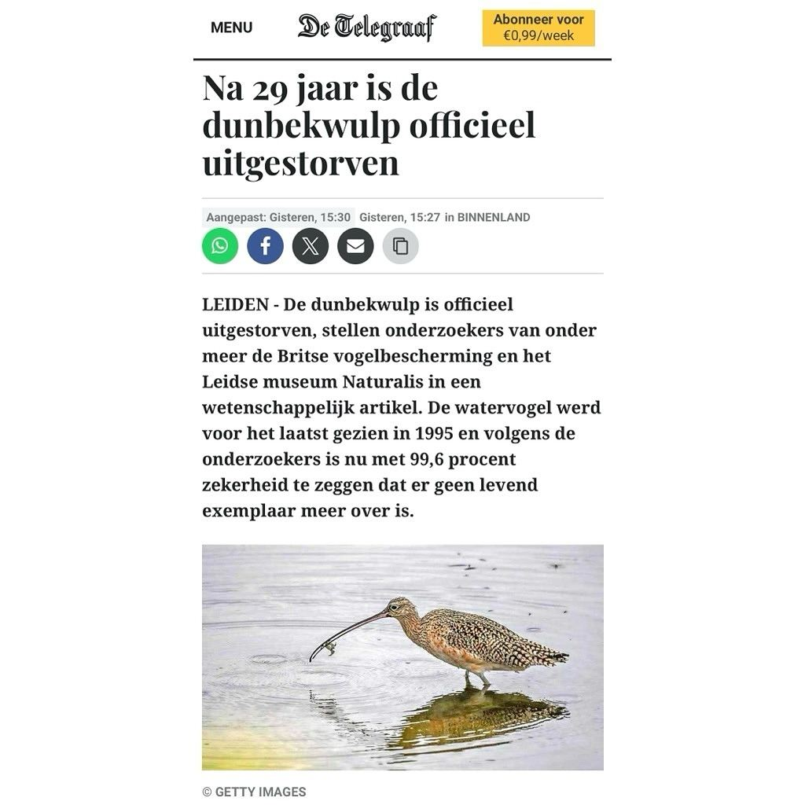

Amerikaanse wulp, geen dunbekwulp
19 november 2024 · De Telegraaf
- Op de foto
- Amerikaanse wulp
- Het ging over
- Dunbekwulp

Gisteren is de Dunbekwulp officieel uitgestorven verklaard. Alle nieuwsplatforms pakten het nieuws op. Ik moet zeggen, dat ging verrassend goed. Helaas was daar tóch @telegraaf.nl om het feestje te verpesten. Bij het nieuwsbericht plaatsten ze namelijk een foto van een Long-billed Curlew / Amerikaanse wulp. Die mag ook best een keer in Nederland komen 😉